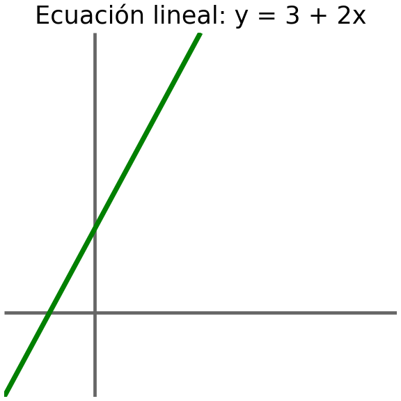
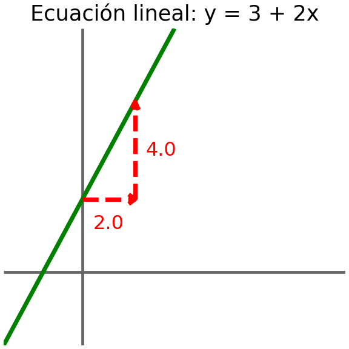
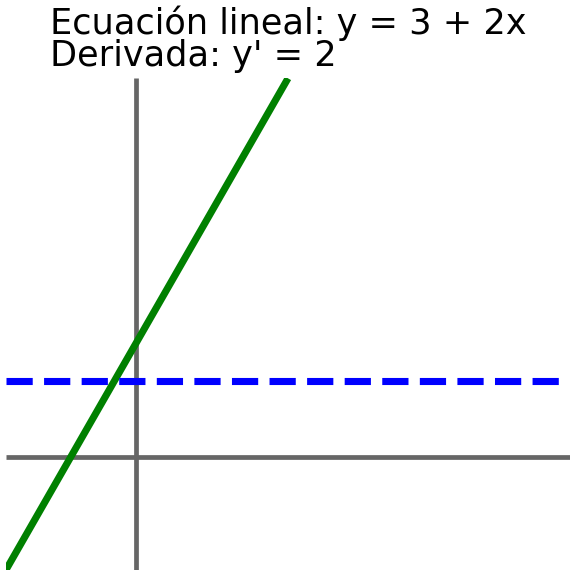
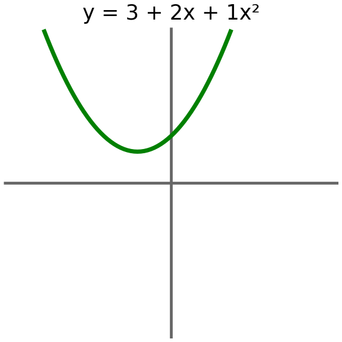
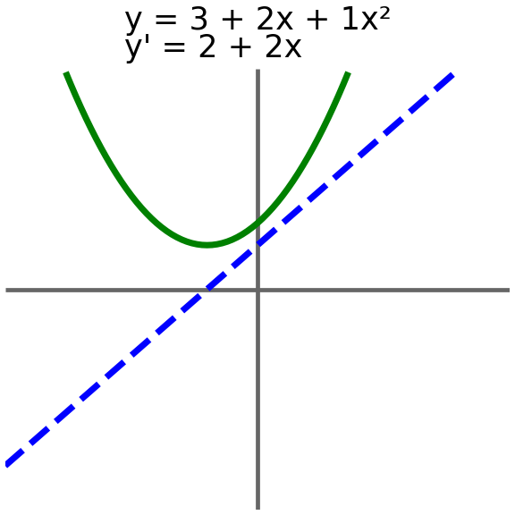
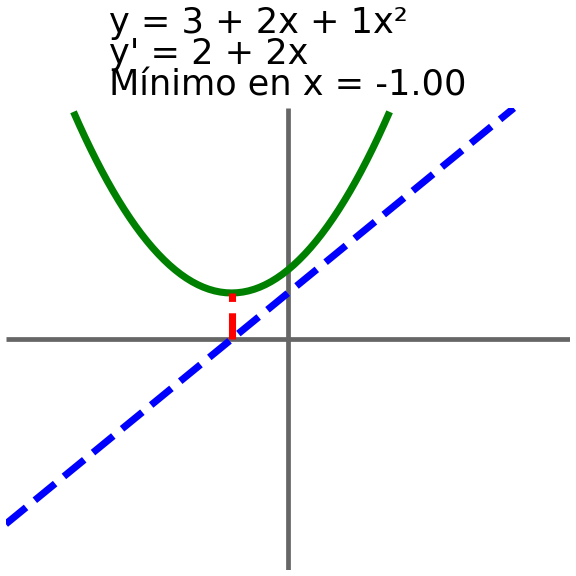

\[\frac{\Delta y}{\Delta x} = \frac{f(0.0 + 0.001) - f(0.0)}{0.001 - 0.0} = \frac{3.002 - 3.0}{0.001} = 2\]
Derivadas
¿Qué es una derivada?
Supongamos que tenemos la siguiente ecuación lineal:
\[y = 3 + 2 \cdot x\]

Queremos entender cómo cambia \(y\) con respecto a \(x\). Es decir, queremos entender la tasa de cambio de \(y\) con respecto a \(x\). Por ejemplo, si \(x\) está en 0.0, entonces \(y\) es igual a 3.0. Si aumentamos \(x\) a 2.0, entonces \(y\) tendrá valor 7.0. Por lo tanto el cambio de \(y\) con respecto a \(x\) es:
\[\frac{\Delta y}{\Delta x} = \frac{f(2.0) - f(0.0)}{2.0 - 0.0} = \frac{7.0 - 3.0}{2.0 - 0.0} = 2\]

Es decir, que cuando \(x\) aumenta en 2.0, \(y\) aumenta en 4.0. Por lo tanto, \(y\) ha aumentado 2 veces más que \(x\).
Ahora supongamos que queremos entender cómo cambia \(y\) con respecto a un incremento minúsculo de \(x\).
Y eso es simplemente la derivada:
La derivada de una función \(f\) con respecto a \(x\) es el límite de la tasa de cambio de \(f\) con respecto a \(x\) cuando el incremento de \(x\) tiende a cero.
Matemáticamente, se define como: \[f'(x) = \lim_{\Delta x \to 0} \frac{f(x + \Delta x) - f(x)}{\Delta x}\]
Para una función lineal, la tasa de cambio de \(y\) con respecto a \(x\) es constante (es decir, no depende de el punto en el que se evalúe la función) y tampoco depende del tamaño incremento de \(x\). Así, para una función lineal la derivada es simplemente el coeficiente de \(x\) (en este ejemplo, 2).
Gráficamente:

En general, la derivada de una función no es constante y depende del punto en el que se evalúe la función. Por ejemplo, para la siguiente función cuadrática:
\[y = 3 + 2 \cdot x + 1 \cdot x^2\]

Observamos que, en esta función (y en general en cualquier función no lineal), el cambio en \(y\) depende del punto \(x\) en el que se evalúe la función y del tamaño del incremento de \(x\):
\[\frac{\Delta y}{\Delta x} = \frac{f(2.0) - f(0.0)}{2.0 - 0.0} = \frac{11.0 - 3.0}{2.0 - 0.0} = {4.00}\]
\[\frac{\Delta y}{\Delta x} = \frac{f(0.0 + 0.001) - f(0.0)}{0.001 - 0.0} = \frac{3.002 - 3.0}{0.001} = {2.00}\]
\[\frac{\Delta y}{\Delta x} = \frac{f(2.0 + 0.001) - f(2.0)}{2.001 - 2.0} = \frac{11.006 - 11.0}{0.001} = {6.00}\]
Por lo tanto, la derivada en una función depende del punto \(x\) en que es evalúe y requiere tomar incrementos infinitesimales para su cálculo. Para la función cuadrática, aplicando la definición de la derivada, podemos demostrar que la función de la derivada es:
\[f'(x) = \lim_{\Delta x \to 0} \frac{f(x + \Delta x) - f(x)}{\Delta x}\]
\[f'(x) = \lim_{\Delta x \to 0} \frac{(3 + 2(x + \Delta x) + 1(x + \Delta x)^2) - (3 + 2x + 1x^2)}{\Delta x} = \lim_{\Delta x \to 0} \frac{2\Delta x + 1(2x\Delta x + \Delta x^2)}{\Delta x} = 2 + 2x\]
Si aplicamos la función de la derivada a los puntos \(x_0\) y \(x_1\), obtenemos los mismos resultados que obtuvimos al calcular la tasa de cambio con incrementos infinitesimales:
\[f'(0.0) = 2 + 2 \cdot 0.0 = 2.00\]
\[f'(2.0) = 2 + 2 \cdot 2.0 = 6.00\]
Podemos representar gráficamente la función de la derivada:

¿Para qué sirven las derivadas?
En la sección anterior vimos que la derivada de una función nos permite entender cómo cambia la función con respecto a cambios infinitesimales en su variable independiente (\(x\)). Esto es útil para entender el comportamiento de la función y para encontrar puntos críticos (máximos, mínimos y puntos de inflexión).
Otra forma de entender la derivada es como la función que nos da la pendiente de la tangente a la curva de la función original en cada punto. Así cuando la derivada es positiva, la función original está aumentando, y cuando la derivada es negativa, la función original está disminuyendo. Cuando la derivada es cero, la función original tiene un punto crítico (puede ser un máximo, un mínimo o un punto de inflexión).
En el ejemplo de la función cuadrática anterior, podemos encontrar su mínimo global encontrando el punto en el que la derivada es cero:
\[0 = 2 + 2x \Rightarrow x = -\frac{2}{2} = -1.00\]

Derivadas parciales
Hasta ahora hemos visto la derivada de una función con una sola variable independiente (\(x\)). Sin embargo, en muchos casos, las funciones pueden tener múltiples variables independientes. Por ejemplo, podríamos tener la siguiente función:
\[y = b_0 + b_1 x_1 + b_2 x_2 \]
En este caso, la función tiene dos variables independientes (\(x_1\) y \(x_2\)). Para entender cómo cambia \(y\) con respecto a cada una de las variables independientes, podemos calcular las derivadas parciales:
\[\frac{{\partial y}}{{\partial x_1}} = b_1\] \[\frac{{\partial y}}{{\partial x_2}} = b_2\]
Para calcular la derivada parcial de \(y\) con respecto a \(x_1\), tratamos a \(x_2\) como una constante y calculamos la derivada de \(y\) con respecto a \(x_1\). De manera similar, para calcular la derivada parcial de \(y\) con respecto a \(x_2\), tratamos a \(x_1\) como una constante y calculamos la derivada de \(y\) con respecto a \(x_2\).
Calcular el mínimo y el máximo de una función con múltiples variables independientes es un poco más complicado que en el caso de una función con una sola variable independiente. Sin embargo, el concepto es similar: encontramos los puntos críticos de la función (donde las derivadas parciales son cero) y luego evaluamos la función en esos puntos para determinar si son máximos, mínimos o puntos de inflexión. Esto se puede realizar resolviendo el sistema de ecuaciones formado por las derivadas parciales igualadas a cero:
\[ \begin{cases} \frac{{\partial y}}{{\partial x_1}} &= 0 \\ \frac{{\partial y}}{{\partial x_2}} &= 0 \end{cases} \]
Las derivadas en el aprendizaje automático
En el aprendizaje automático, las derivadas son fundamentales para optimizar los modelos. Por ejemplo, en la regresión lineal, queremos encontrar los coeficientes \(b_0\), \(b_1\), …, \(b_n\) que minimizan la función de pérdida (por ejemplo, el error cuadrático). Afortunadamente, en general no es necesario calcular las derivadas a mano, ya que existen librerías como TensorFlow, PyTorch y JAX que calculan las derivadas de manera automática utilizando técnicas de diferenciación automática. Así que lo único realmente importante es entender el concepto de derivada y cómo se relaciona con la optimización de los modelos.
Por ejemplo, podemos utilizar Pytorch para calcular la derivada de la función cuadrática que vimos anteriormente en los puntos \(x_0\) (0.0) y \(x_1\) (2.0):
import torch
x = torch.tensor(x_0, requires_grad=True)
y = b_0 + b_1 * x + b_2 * x**2
y.backward()
print(f"Derivada de y con respecto a x en x={x.item():.2f}: {x.grad.item():.2f}")
x = torch.tensor(x_1, requires_grad=True)
y = b_0 + b_1 * x + b_2 * x**2
y.backward()
print(f"Derivada de y con respecto a x en x={x.item():.2f}: {x.grad.item():.2f}")Derivada de y con respecto a x en x=0.00: 2.00
Derivada de y con respecto a x en x=2.00: 6.00Se puede comprobar que los resultados obtenidos con Pytorch son los mismos que los obtenidos al calcular la derivada de manera analítica. Esto es una gran ventaja, ya que nos permite calcular derivadas de funciones mucho más complejas sin tener que preocuparnos por el cálculo manual de las derivadas.